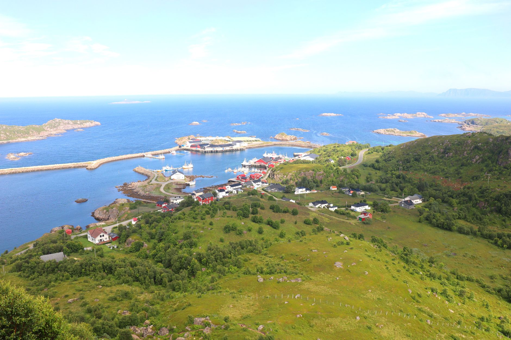
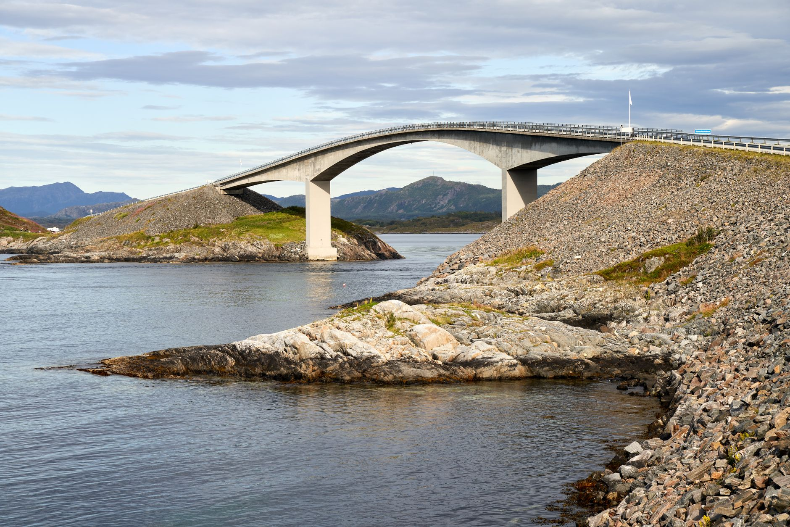
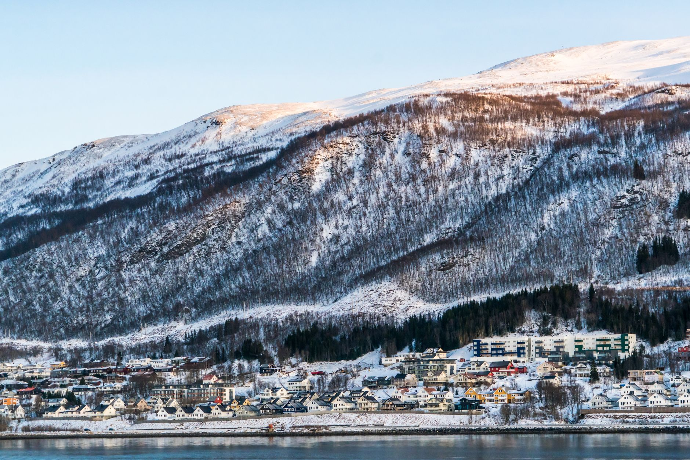
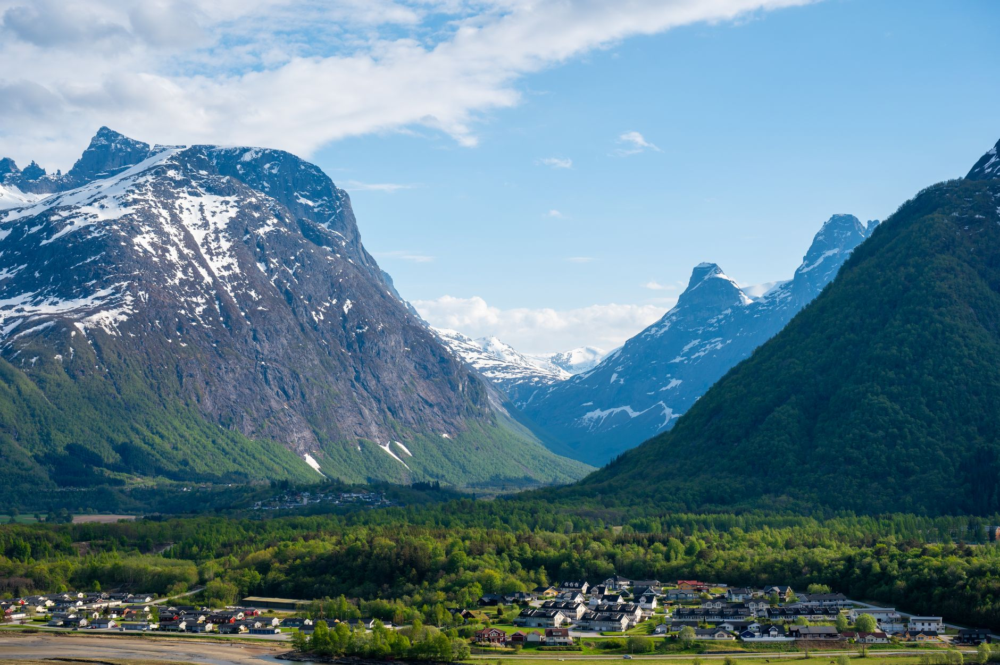
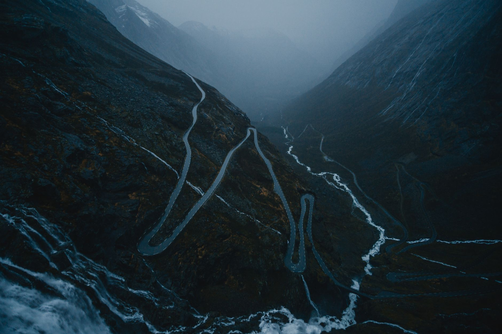

Photo: Peter Holmboe / Pexels
This route links two of Norway's most photographed roads with the towns between them: Kristiansund, the Atlantic Road at Averøy, Molde, Åndalsnes, and the hairpins of Trollstigen. Neither famous stretch is long enough to be a route on its own, so this is the drive people actually take to see both in one day.
A car is the only realistic way to link these places. The Atlantic Road and Trollstigen are both built for driving, not for public transport, and the towns between them are spread across fjords that a bus route wouldn't follow directly.
-

KristiansundThe northern end of the route, a town spread across four islands and connected by bridges and a subsea tunnel. -

Averøy — the Atlantic Road8.3 km and eight bridges, built through 12 hurricanes during construction. Storseisundet, the tallest bridge, is angled so it looks from a distance like it ends in open sea. -

MoldeKnown as the town of roses, with 222 named peaks visible across the fjord and the world's oldest continuously running jazz festival, since 1961. -

ÅndalsnesWhere the Romsdalen valley meets the fjord, framed by the vertical rock face of Romsdalshornet. -

Trollstigen11 hairpin bends, each one named after the foreman who oversaw its construction. Open only from spring to autumn, closed the rest of the year by snow and avalanche risk.
Stop photos: Mario Vogt, Barnabas Davoti, Pixabay, Nils R, Johannes Beckmann / Pexels
Trollstigen is the one stop on this route with a hard seasonal limit. Everything else here is drivable year-round, weather permitting.
Good to know before you drive it
- Trollstigen typically opens between mid-May and early June and closes with the first heavy snow, usually in October, sometimes later. There's no fixed calendar date either way. Check the road's status before planning around it if you're travelling outside peak summer.
- Norway's toll system is fully electronic, with no barriers or booths to stop at. Cameras read the license plate and the rental company bills you afterward, usually with a small service fee added. It's normal to pass several tolls on this route without noticing.
- Speed limits are generally 80 km/h on open roads and 50 km/h in towns, but drop lower on the hairpins themselves, where the road width barely allows two cars to pass.
- 162 km and about 3.1 hours of driving doesn't include stopping time. Both the Atlantic Road and Trollstigen have viewpoints worth pulling over for, and rushing past them defeats the reason to drive this route at all.
Ready to book this drive? This route runs 162 km and about 3.1 hours behind the wheel, entirely inside Auto Europe's coverage area.
We book through Auto Europe. It compares Hertz, Sixt and the other major agencies in one search, with cross-border and one-way terms visible before checkout instead of buried in each company's own fine print.
Compare car rental prices →This is an affiliate link. Booking through it may earn Travel Gap a commission at no extra cost to you.
Read the full Europe road trip planning guide for what to check before you book anywhere on the continent.